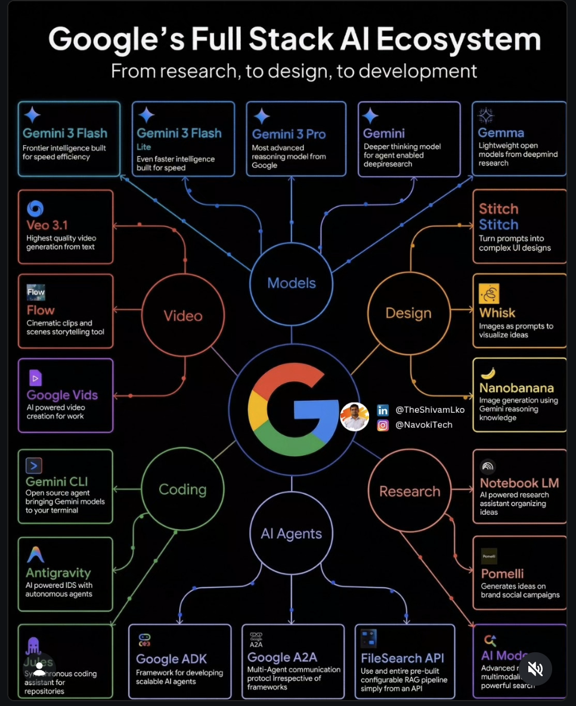

AIusage · 구글AI · AItools
Google Full Stack AI
Ecosystem 2026
커리어를 미래 대비하려면 이 생태계의 조각들이 어떻게 연결되는지 알아야 합니다. 6개 핵심 기둥으로 나뉘는 구글의 완전한 AI 스택을 살펴봅니다.

한눈에 보기
6
핵심 기둥
14+
수록 도구
2026
기준 연도
"커리어를 미래 대비하려면 이 조각들이 어떻게 연결되는지 알아야 합니다."
Pillar 01
모델 Models
모델은 전체 생태계의 두뇌입니다. 구글은 Gemini 계열을 중심으로 다양한 크기와 목적의 모델을 제공합니다.
Gemini 3 Pro
최고 성능 플래그십 멀티모달 모델
Gemini Flash
속도와 효율을 위한 경량 추론 모델
Gemma
오픈소스 경량 모델, 로컬 실행 가능
💬 섹션 리뷰 질문 — 모델
▶
Gemini Flash와 Pro의 실제 사용 시나리오 구분이 명확한가? 독자가 어떤 상황에서 각 모델을 선택할지 알 수 있는가?
Gemma(오픈소스)와 클라우드 전용 모델의 차이가 설명되어 있는가? 온프레미스 요구사항이 있는 독자를 위한 맥락이 있는가?
2025 대비 2026의 실질적 성능·기능 향상이 언급되어 있는가?
Pillar 02
AI 에이전트 Agents
자율 작업자(Autonomous Workers)로서 에이전트 프레임워크는 복잡한 멀티스텝 태스크를 실행하는 핵심 레이어입니다.
Google ADK
Agent Development Kit — 에이전트 개발 표준 프레임워크
A2A
Agent-to-Agent 통신 프로토콜
Pomelli
에이전트 오케스트레이션 레이어
💬 섹션 리뷰 질문 — 에이전트
▶
ADK, A2A, Pomelli의 계층 관계가 독자에게 명확한가? 각각이 스택의 어느 레벨에 속하는지 도식이 있으면 좋겠는가?
A2A 프로토콜이 OpenAI 등 타사 에이전트와 상호운용 가능한지 여부가 언급되어 있는가?
"자율 작업자"라는 표현에 대한 실제 한계(hallucination, 권한 제어 등)가 균형 있게 제시되어 있는가?
Pillar 03
코딩 Coding
개발자 경험을 재정의하는 도구들. AI-first IDE부터 CLI 통합까지, 코딩 워크플로 전체가 변화하고 있습니다.
Antigravity IDE
AI-native 통합 개발 환경
Jules
자율 코딩 에이전트 — GitHub 이슈를 자동 처리
Gemini CLI
터미널에서 Gemini 활용, 코드 생성·설명
💬 섹션 리뷰 질문 — 코딩
▶
Antigravity IDE가 VS Code, Cursor, Windsurf와 어떻게 다른지 차별화 포인트가 충분한가?
Jules의 GitHub 이슈 자동 처리가 팀 워크플로에 미치는 보안·거버넌스 이슈가 논의되어 있는가?
Gemini CLI와 기존 GitHub Copilot CLI의 실질적 차이가 있는가?
Pillar 04
디자인 Design
비주얼 빌더 도구들이 디자이너의 역할을 확장합니다. 텍스트-투-UI, 이미지 편집, 브랜드 일관성 유지까지 AI가 담당합니다.
Stitch
텍스트에서 UI 컴포넌트 생성
Whisk
이미지 기반 크리에이티브 에디터
Nanobanana
마이크로 에셋 생성 및 브랜드 키트
💬 섹션 리뷰 질문 — 디자인
▶
Stitch로 생성한 UI가 실제 프로덕션 품질인지, 아니면 프로토타입 수준인지 명확한가?
Nanobanana는 현재 공개된 도구인가? 이름이 생소하여 사실 확인이 필요해 보인다.
디자이너 직군에 대한 영향(대체 vs. 증강)이 균형 있게 언급되어 있는가?
Pillar 05
비디오 Video
동적 콘텐츠 생성 영역에서 구글의 Veo 계열이 영상 제작 파이프라인 전체를 재편하고 있습니다.
Veo 3.1
고해상도 텍스트-투-비디오 생성 모델
Flow
영상 편집 및 스토리보드 자동화
💬 섹션 리뷰 질문 — 비디오
▶
Veo 3.1이 Sora, Runway Gen-3 대비 구체적으로 어떤 우위를 가지는가?
AI 생성 영상의 저작권·딥페이크 이슈에 대한 구글의 접근 방식이 언급되어 있는가?
Flow의 "스토리보드 자동화"가 실제 프로덕션 워크플로에서 어떤 단계를 대체하는지 구체적인 예시가 있는가?
Pillar 06
리서치 Research
데이터 합성과 심층 리서치 도구들이 지식 워크의 방식을 근본적으로 바꿉니다. 방대한 문서를 요약하고, 질의하고, 인사이트를 추출합니다.
NotebookLM
소스 기반 AI 리서치 & 팟캐스트 생성
AI Mode
Google 검색의 AI 통합 응답 레이어
💬 섹션 리뷰 질문 — 리서치
▶
NotebookLM이 Perplexity, Microsoft Copilot과 구분되는 핵심 차별점이 명확한가?
AI Mode가 Google Search와 기존 SEO 생태계에 미치는 영향이 독자에게 충분히 전달되는가?
"데이터 합성"이 무엇을 뜻하는지 비전문가 독자를 위한 구체적 예시가 있는가?
Review
주요 발견 및 열린 질문
수직 통합의 완성도: 구글이 모델 → 에이전트 → 개발 도구 → 디자인 → 영상 → 리서치까지 전 레이어를 자체 생태계로 엮으려는 전략이 뚜렷하다. 독점 생태계 의존도 리스크를 독자가 인식하도록 할 필요가 있다.
커리어 기회: 6개 기둥 중 에이전트(ADK, A2A)는 아직 숙련 인력이 부족한 영역. 커리어 지향 독자에게 가장 구체적인 행동 가이드가 될 수 있다.
검증 필요: Nanobanana, Pomelli, Antigravity IDE는 현재 공개 출시 여부가 불분명하다. 노트 발행 전 출시 상태 확인 권장.
균형 부족: 전체 톤이 홍보성으로 읽힐 수 있다. 경쟁사(OpenAI, Anthropic, Microsoft) 비교 시각, 또는 각 도구의 한계점을 한 줄씩이라도 추가하면 신뢰도가 높아질 것.
구조 제안: 현재 병렬 나열 구조인데, "모델 → 에이전트 → 도구"의 의존 관계 흐름을 한 번 더 설명하면 독자가 큰 그림을 더 빨리 이해할 수 있다.
Feedback
독자 노트 & AI에게 전달하기
아래에 읽으면서 든 생각, 질문, 또는 수정 제안을 메모하세요. 완성되면 "AI 피드백 생성" 버튼으로 프롬프트를 만들어 복사할 수 있습니다.
- 각 도구의 공개 출시 여부 확인
- 경쟁 제품 비교 관점 추가
- 각 기둥의 커리어 적용 시나리오 구체화
- 모델 계층 간 의존 관계 다이어그램 추가
- 비전문가를 위한 용어 설명(글로서리) 추가
- 원문 영어 표현과 한국어 번역 일관성 확인
🤖 AI 피드백 프롬프트 생성
아래 버튼을 클릭하면 이 노트의 컨텍스트 + 체크리스트 상태 + 내 노트를 합쳐 AI에게 전달할 수 있는 프롬프트가 생성됩니다.
버튼을 눌러 프롬프트를 생성하세요.
Reader feedback
Leave a public GitHub comment or reaction below.